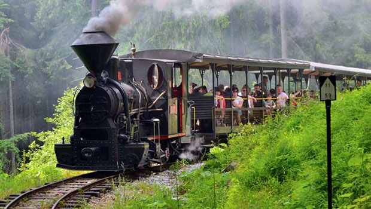
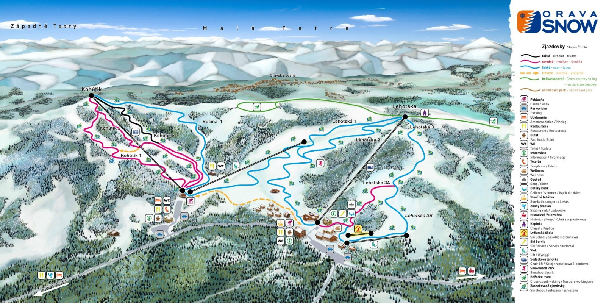
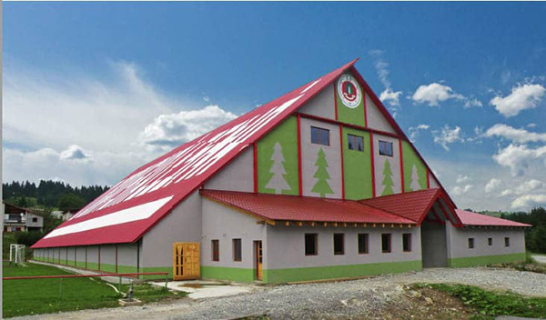

Historická lesná uvraťová železnica
Bývalá Kysucko-oravská lesná železnica (KOLŽ) vznikla v roku 1926 spojením lesných železníc vybudovaných v roku 1915 - 1918, kysuckej - z Oščadnice do Chmúry (Nová Bystrica, časť Vychylovka) a oravskej - z Lokce do Erdútky (terajšej Oravskej Lesnej). Súčasťou inventára HLÚŽ sú historické parné a motorové rušne, vozne a pod.

lesná uvraťová železnica
Lyžarske stredisko OravaSnow
V lyžiarskom stredisku sa nachádzajú 2 sedačkové lanovky. Celková dlžka tratí je 8500.

Mapa lyžiarskeho strediska
Zimný štadión TJ Oravská Lesná
Krytý zimný štadión v Oravskej Lesnej vznikol na pôvodnom prírodnom hokejovom ihrisku postavanom v rokoch 1992. V roku 1998 sa začala výstavba zimného štadióna, ktorá trvala do roku 2000. .

Zimný štadión